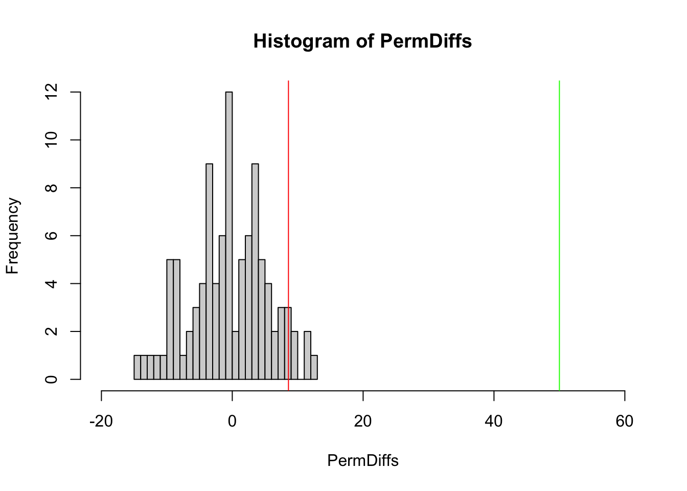

Num <- as.numeric(readline(prompt = "Syötä numero: "))
if (Num == 0){ print("Nolla") } else {
if (Num > 0){
print("positiivinen")
} else {
print("negatiivinen")
}
}3 Osa 3 - Raja-arvolause ja permutaatiotesti
Osan 3 muistiinpanot ja tehtävät.
3.1 Osa 3. alkutehtävät
Tehtävänanto: Kirjoita R-skripti, joka kysyy numeroa ja kertoo onko numero positiinen vai negatiivinen.
Tehtävänanto: Kirjoita R-skripti, joka kysyy kurssin arvosanaa (0-100) #ja kertoo onko kurssin suoritus hyväksytty vain hylätty. #Opiskelijan pitää saada vähintään 50 pistettä.
Num <- as.numeric(readline(prompt = "Syötä kurssin arvosana 0-100: "))
if (Num < 50){ print("Hylätty") }else { print("Hyväksytty") }Tehtävänanto: Kirjoita R-skripti, joka kysyy numeroa ja kertoo onko numero parillinen vai pariton.
Num <- as.numeric(readline(prompt = "Syötä numero: "))
if (Num %% 2 ==0){ print("Parillinen") } else { print("Pariton") }#parillisuus saadaan tsekattua jakojäännöksellä, jos 2 jaettaessa nolla -> parillinen # jakojäännös lasketaan %% operaattorilla
10 %% 2 10 %% 3 11 %% 2
#esim. 10/2 jakojäännös on 0 ; 10/3 jakojäännös 1 ; 11 / 2 jakojäännös 1
Tehtävänanto: Kirjoita for-silmukka, joka tulostaa numerot 1-10.
for (i in 1:10){ print(i) }[1] 1
[1] 2
[1] 3
[1] 4
[1] 5
[1] 6
[1] 7
[1] 8
[1] 9
[1] 10Tehtävänanto: Kirjoita for-silmukka, joka tulostaa lukujen 1:10 neliön.
for (i in 1:10){ print(i * i ) }[1] 1
[1] 4
[1] 9
[1] 16
[1] 25
[1] 36
[1] 49
[1] 64
[1] 81
[1] 100for (i in 1:10){ print(i^2 ) }[1] 1
[1] 4
[1] 9
[1] 16
[1] 25
[1] 36
[1] 49
[1] 64
[1] 81
[1] 100for (i in 1:10){ print(i**2 ) }[1] 1
[1] 4
[1] 9
[1] 16
[1] 25
[1] 36
[1] 49
[1] 64
[1] 81
[1] 100Kolme eri tapaa
Tehtävänanto: Kirjoita for-silmukka, joka laskee lukujen 1:100 summan.
summa <- 0
for (i in 1:100){ summa <- summa + i }
print(summa)[1] 50503.2 Permutaatiotesti
3.2.1 Teoriaa permutaatiosta
Permutaatio tarkoittaa järjestystä tai uudelleenjärjestelyä
Esim. lukujoukko (1,2,3) tai kirjainsarja (A, B, C) voivat saada 6 eri permutaatiota eli uniikkia järjestystä
Mahdollisten permutaatioden määrä lasketaan käyttämällä kertomaa (merkitään !)
P(n)=n!
- missä P tarkoittaa permutaatioden määrää ja n alkioiden lukumäärää
- Esim. kun 4 alkiota lasketaan 4! = 4 * 3 * 2 * 1 = 24
- Tai kun 3 alkiota 3! = 3 * 2 * 1 = 6
Kertoma lasketaan R-kielellä factorial() funktiolla
factorial(4)[1] 24Permutaatiotesti on ei-parametrinen eli toimii millä tahansa aineistoilla
- Datan ei tarvitse siis täyttää normaalisuusoletusta
Permutaatiotestillä saadaan laskettua p-arvo eli kuinka todennäköisesti sattumalta saadaan sama tulos.
Permutaatioiden määrää lisäämällä sadaan p-arvo laskettua tarkemmin. Viljamin videoilla käytettiin 1000 tai 10 000 permutaatiota.
Thulin (2024) kirjassa neuvotaan nyrkkisääntönä käyttämään 9 999 permutaatiota, koska tällöin p arvo ainakaan usein ei asetu tasan 0,05 vaan sen alle tai yli
3.2.2 Permutaatiotesti ja bootstrap
Permutaatio tarkoittaa yhtä lukujoukon tai R-kontekstissa vektorin järjestystä. Kun ne järjestetään uudelleen, saadaan toinen permutaatio. Esimerkiksi lukujoukolla (1,2,3) on yhteensä kuusi eri permutaatiota. Tilastotieteessä permutaatiota käytetään etenkin permutaatiotestissä, jonka avulla voidaan määrittää p-arvo. Permutaatiotesti on siitä, hyvä työkalu, että se ei oleta aineiston olevan normaalisti jakautunutta, eli sitä voidaan käyttää käytännössä millä hyvänsä aineistolla.
Esimerkiksi, jos kahdelta ryhmältä on mitattu koesuoritus ja halutaan tietää, onko ryhmien suoritusten välillä tilastollisesti merkitsevä ero, niin ensiksi lasketaan suorituspisteiden keskiarvojen erotus. Sen jälkeen sekoitetaan ryhmätunnisteita siten, että ryhmät jakautuvat esim. 9 999 uuteen permutaatioon ja lasketaan jokaisen permutaation kohdalla ryhmien keskiarvoero. Sitten verrataan, kuinka moni permutaatioiden keskiarvoeroista oli yhtä suuria tai suurempia kuin mitattu ero. Mikäli alle 5 % permutaatioista oli suurempia tai yhtä suuria kuin mitattu ero, niin p-arvo on alle 0,05 eli tilastollisesti merkitsevä ja nollahypoteesi voidaan hylätä.
Bootsrap on hiukan vastaava menetelmä kuin permutaatiotesti, mutta se eroaa siten, että siinä sekoitusvaiheessa alkiot arvotaan satunnaisesti uuteen ”otokseen” siten, että osa saattaa esiintyä useamman kerran ja osa ei ollenkaan. Eli kun permutaatiotestissä jokaisessa permutaatiossa on kaikki alkiot mukana, mutta vain eri järjestyksessä, niin bootstrapissä on hiukan eri kokoelma alkiota valikoituneena alkuperäisestä otoksesta. Yhdessä ”otoksessa” jokin alkio saattaa siis esiintyä vaikkapa kolme kertaa ja jokin ei kertaakaan. Samalla tavalla kuin permutaatiotestissä tuo satunnaistus toistetaan esim. 10 000 kertaa ja bootstrapissä ideana on arvioida kuinka hyvin alkuperäinen otos kuvaa perusjoukkoa, jota uudet satunnaisesti luodut otokset ikään kuin kuvaavat. Sen myötä bootstrapillä voidaan arvioida luottamusvälejä eli sitä, kuinka todennäköisesti mitattu suure osuu määritellylle välille. Yleensä luottamusvälit arvioidaan 95% tasolle, joka tarkoittaa, että jos mittaus toistettaisiin 100 kertaa niin 95 kertana luottamusvälit arvioitaisiin oikein ja perusjoukon todellinen arvo olisi niiden sisällä ja 5 kertaa taas ulkopuolella.
Permutaatiotesti: Sekoittaa ryhmätunnisteet (luo nollahypoteesin rikkomalla yhteyden tiedon ja ryhmän välillä).
#permutaatiotesti
# tehdään kokeilumielessä aineisto, jossa ryhmät selkeästi eroavat toisistaan
group1 <- 1:50
group2 <- 51:100
# luodaan dataframe, jossa value on ryhmien arvot ja rep() funktiolla tehdään labelit rymhmille eli 1 ja 2
data <- data.frame(value = c(group1, group2), group = rep(c(1,2), each=50))
# lasketaan ryhmien keskiarvojen ero
# yksinkertaisesti GrpDiff <- mean(group2) - mean(group1)
# Viljamin parempi tyyli, jolla saadaan haettua tieto dataframesta myöhemmminkin
GrpDiff <- mean( data$value[ data$group==2]) - mean( data$value[ data$group==1])
#Luodaan datasta permutaatioita ja lasketaan permutaatioiden keskiarvoerot
Nperms = 100;
# alustetaan numeric() funktiolla muuttujaan oikea määrä paikkoja permutaatioille
PermDiffs <- numeric(Nperms)
# for loopissa sample funktiolla luodaan Nperms kertaa uusi permutaatio labeleille
# eli 1 ja 2 sekoitetaan uuteen järjestykseen
# sitten lasketaan keskiarvoerot uudella permutaatiolla ja talletetaan PermDiffs muuttujaan
# indeksoituna [i]
# tämä toistetaan Nperms kertaa
for(i in 1:Nperms){
# shuffle labels
# sample funktio arpoo otoksen lukuarvot satunnaiseen järjestykseen eli tekee uuden permutaation
PermLabels <- sample(data$group)
# lasketaan ryhmien keskiarvojen erotus Nperms määrälle permutaatioita
PermDiffs[i] <- mean( data$value[ PermLabels==2]) - mean(data$value[ PermLabels==1])
}
# Histogrammista voidaan katsoa onko havaittu keskiarvoero suurempi kuin
# 95 % satunnaisista permutaatioista
# abline() komennolla voidaan piirtää pystyviivat histogramiin
# abline(a,b) funktiossa a = vakio eli x-akselin leikkauskohta, b = kulmakerroin
# pystysuoran viivan voi piirtää abline(v=a) komennolla, v = vertical tässä kontekstissa
# todellinen keskiarvoero saadaan piirrettyä lisäämällä se abline(v= ) komentoon
# kohta, jossa 95% permutaatioista on pienempiä saadaan quantile(x , 0.95) funktiolla
# se talletetaan OneSided muuttujaan
OneSided <- quantile(PermDiffs, .95)
hist(PermDiffs, breaks = 30, xlim=c(-20,60))
abline(v=GrpDiff, col="green")
abline(v=OneSided, col="red")
#myös voidaan manuaalisesti etsiä kohta, jossa permutaatioiden keskiarvoero on sama, kuin todellinen
# ryhmien ero, ja katsoa onko kuinka iso osa permutaatioista sen alle
# sortataan permutaatiot sort() funktiolla
sort(PermDiffs) [1] -14.44 -13.16 -12.64 -11.44 -10.40 -9.96 -9.88 -9.32 -9.28 -9.20
[11] -8.88 -8.84 -8.68 -8.60 -8.48 -7.84 -6.84 -6.00 -5.48 -5.32
[21] -5.08 -4.44 -4.40 -4.40 -4.08 -3.92 -3.84 -3.80 -3.72 -3.64
[31] -3.60 -3.56 -3.48 -3.04 -2.92 -2.76 -2.40 -2.40 -1.76 -1.76
[41] -1.64 -1.48 -1.08 -1.08 -0.96 -0.80 -0.76 -0.68 -0.60 -0.44
[51] -0.40 -0.36 -0.20 -0.16 -0.16 0.00 0.40 0.80 1.08 1.08
[61] 1.12 1.44 1.84 2.28 2.32 2.32 2.48 2.76 2.96 3.08
[71] 3.24 3.36 3.40 3.56 3.68 3.72 3.80 3.84 4.16 4.24
[81] 4.40 4.48 4.56 5.12 5.44 5.80 5.80 6.40 6.68 7.08
[91] 7.92 7.96 8.16 8.56 8.56 9.12 9.88 11.04 11.96 12.56# tässä tapauksessa kaikki permutaatioiden keskiarvoerot jäävät todellisen keskiarvoeron alle eli sen
# mukaan ero on hyvinkin merkitsevä
# sen vuoksi myöskään Viljamin tapa laskea p-arvo ei toimi, koska ei indeksistä ei tule yhtään osumaa
# toimii silloin, kun permutaatioista vähintään 1 on yli havaitun keskiarvoeron
#p-arvon laskeminen
#SortedDiffs <- sort(PermDiffs)
#FirstIndex <- min(which( SortedDiffs > GrpDiff))
#Pval <- 1 - FirstIndex/Nperms
# geminin ehdottama tapa laskea p-arvo
# sum() laskee TRUE-arvojen määrän (TRUE = 1, FALSE = 0)
# eli laskee niiden kertojen lukumäärän, kun permutaatioiden ero, on suurempi kuin havaittu ero
Osumat <- sum(PermDiffs >= GrpDiff)
Pval <- Osumat / Nperms
# gemini myös suositteli lisäämään 1 sekä osoittajaan, että nimittäjään, jolla vältetään
# tasan 0 p-arvo
# tasan 0 p-arvo on teoreettisesti mahdoton, koska alkuperäinen havainto on oikeasti yksi permutaatioista
Osumat <- sum(PermDiffs >= GrpDiff)
Pval <- (Osumat + 1)/(Nperms + 1)
Pval[1] 0.00990099# t.test(arvot ~ ryhmä, data = aineisto)
t.test(value ~ group, data = data)
Welch Two Sample t-test
data: value by group
t = -17.15, df = 98, p-value < 2.2e-16
alternative hypothesis: true difference in means between group 1 and group 2 is not equal to 0
95 percent confidence interval:
-55.78567 -44.21433
sample estimates:
mean in group 1 mean in group 2
25.5 75.5 t.test(group1, group2)
Welch Two Sample t-test
data: group1 and group2
t = -17.15, df = 98, p-value < 2.2e-16
alternative hypothesis: true difference in means is not equal to 0
95 percent confidence interval:
-55.78567 -44.21433
sample estimates:
mean of x mean of y
25.5 75.5